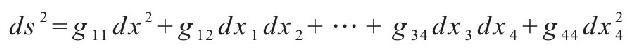

第一章
2.征税的几何学
1 叶芝写道：叶芝在他的诗《黎明》（The Dawn）中提及巴比伦人的中立性格，是这样开始的：
I would be ignorant as the dawn
That has looked down
On that old queen measuring a town with the pin of a brooch，
Or on the withered men that saw
From their pedantic Babylon
The careless planets in their courses，
The stars fade out where the moon comes，
And took their tablets and did sums……
2 伊尚戈骨：Michael R.Williams, A History of Computing Technology（Englewood Cliffs, NJ：Prentice-Hall，1985），pp.39-40.
3 对数据执行操作的想法：For a good discussion of the origins of counting and arithmetic, see Williams, chap.1.
4 使用“2”这个词：Ibid.，p.3.5 in the sixth millennium B.C.，when the people：R.G.W.Anderson, The British Museum（London：British Museum Press，1997），p.16.
5 只有尼罗河：Pierre Montet, Eternal Egypt, trans.Doreen Weightman（New York：New American Library，1964），pp.1-8.
6 “埃及”这个名字在科普特语中是“黑色土壤”的意思：Alfred Hooper, Makers of Mathematics（New York：Random House，1948），p.32.
7 大约在那个时期，他们还发展了写作：Georges Jean, Writing：The Story of Alphabets and Scripts, trans.Jenny Oates（New York：Harry N.Abrams，1992），p.27.
8 税收或许是几何学发展中的第一个需要：希罗多德（希腊历史学家）写过关于征税问题的一本书，促进了希腊几何学的发展。See W.K.C.Guthrie, A History of Greek Philosophy（Cambridge, UK：University Press，1971），pp.34-35，and Herbert Turnbull, The Great Mathematicians（New York：New York University Press，1961），p.1.
9 每年百分之百的利率：Rosalie David, Handbook to Life in Ancient Egypt（New York：Facts on File，1998），p.96.
10 军队把敌人的阳具砍下只为计数：这些令人惊异的史实可以从阿列克谢提供的书籍中找到：James Putnam and Jeremy Pemberton, Amazing Facts About Ancient Egypt（London and New York：Thames&Hudson，1995），p.46.
11 又一个文明诞生了：关于巴比伦和苏美尔的数学发展可参见讨论Edna E.Kramer, The Nature and Growth of Modern Mathematics（Princeton, NJ：Princeton University Press，1981），pp.2-12.
12 更成熟的数学体系归功于巴比伦人：埃及数学和巴比伦数学的比较可以参见Morris Kline, Mathematical Thought from Ancientto Modern Times（New York：Oxford University Press，1972），pp.11-22.See also H.L.Resnikoff and R.O.Wells, Jr.，Mathematics in Civilization（New York：Dover Publications，1973），pp.69-89.
13 巴比伦人的最新证据来自尼尼微……主要来自尼普尔和基思：Resnikoff and Wells, p.69.
14 巴比伦放贷者甚至计算复利：Kline, p.11.
15 “长度为4……”：引自The First Mathematicians（March 2000），on http：//www.members.aol.com/bbyarsl/first.html；类似的修辞学问题有更复杂的版本，参见Kline, p.9.9最早清晰使用加号可参见：Kline, p.259.
3.在七位哲人之间
16 发现数学还有更多奇妙的东西：泰利斯的生平和作品可参见Sir Thomas Heath, A History of Greek Mathematics（New York：Dover Publications，1981），pp.118-49；Jonathan Barnes, The Presocratic Philosophers（London：Rout-ledge&Kegan Paul，1982），pp 1-16；George Johnston Allman, Greek Geometry from Thales to Euclid（Dublin，1889），pp.7-17；G.S.Kirk and J.E.Raven, The Presocratic Philosophers（Cambridge, UK：University Press，1957），pp.74-98；Hooper, pp.27-38；and Guthrie, pp.39-71.
17 也是米利都比较有名的产业：Reay Tannahill, Sex in History（Scarborough House，1992），pp.98-99.
18 考古学家还发现了酒杯的一小块上刻着西蒙的名字：Richard Hibler, Life and Learning in Ancient Athens（Lanham, MD：University Press of America，1988），p.21.
19 测量金字塔的高度：Hooper, p.37.
20 伊壁鸠鲁依然认为太阳：Erwin Schroedinger, Nature and the Greeks（Cambridge：Cambridge University Press，1996），p.81.
21 泰利斯用埃及人的“地球测量”：Hooper, p.33.
22 本质上是一样的东西……选择鱼作为基本元素：See Guthrie, pp.55-80，and Peter Gorman, Pythagoras, A Life（London：Routledge&Kegan Paul，1979），p.32.
23 生活在港口城市：想了解米利都的生活，参见Adelaide Dunham, The History of Miletus（London：University of London Press），1915.
24 历史上的照片中：Gorman, p.40.
4.神秘的社团
25 毕达哥拉斯听取泰利斯的建议：毕达哥拉斯最深入的一本传记来自于Gorman；see also Leslie Ralph, Pythagoras（London：Krikos，1961）.
26 想象数百万年前，当某个人发出“呀”或“哼”的声音后：See Donald Johanson and Blake Edgar, From Lucy to Language（New York：Simon&Schuster，1996），pp.106-7.
27 毕达哥拉斯的一个门徒这样写道：Jane Muir, Of Men and Numbers（New York：Dodd, Mead&Co.，1961），p.6.
28 攻击一条毒蛇……小偷闯入毕达哥拉斯的家：Gorman, p.108.
29 例如毕达哥拉斯，很多人相信他是：Ibid.，p.19.
30 他有在水上行走的能力：Ibid.，p.110.
31 他们都相信转世：Ibid.，p.111.
32 毕达哥拉斯曾拦住一名男子：Ibid.
33 不随地小便和不在别人面前做爱：Ibid.，p.123.
34 正方形的对角线：设对角线长度为c，假设c可以表示为最简分数形式m/n，（即，m和n没有公约数，至少它们都不同时为偶数）。证明分为三个步骤。第一步，注意到c2=2意味着m2=2n2。换句话说，m2是偶数。因为奇数的平方是奇数，所以m自身也是奇数。第二步，因为m和n不能同时为偶数，所以n一定是奇数。第三步，我们从另一角度看方程m2=2n2。m是偶数，可以把m写成2q，q是某整数。如果我们把m2=2n2中的m替换成2q，我们将得到4q2=2n2，与2q2=n2相同。这意味着n2和n都是偶数。刚才我们已经证明，如果c可写成c=m/n的形式，那么n将既是奇数又是偶数。
这个矛盾说明原始假设c可以写成c=m/n一定是错误的。这类从待证明式子的反面推出矛盾情形的证明，称为归谬法（reductio ad absurdum）。这是毕达哥拉斯的发明之一，至今在数学研究中依然十分有用。
35 他禁止追随者透露：Muir, pp.12-13.
36 康托尔无法忍受这一点而崩溃：Kramer, p.577.
37 罗马人憎恨他们的长发：Gorman, pp.192-193.
5.欧几里得宣言
38 斯宾诺莎效仿他……康德为他辩护：斯宾诺莎是17世纪重要的哲学家，他的主要著作《伦理学》（the Ethics）风格与欧几里得《几何原本》类似，都从定义和公理出发来证明定理。《伦理学》可在中田纳西州立大学（Middle Tennessee State University）网站上找到：Baruch Spinoza, Ethics, trans.by R.H.M.Elwes（1883），MTSU Philosophy WebWorks Hypertext Edition（1997），http：//www.frank.mtsu.edu/～rbrbombard/RB/spinoza/ethica-front.html.See also Bertrand Russell, A History of Western Philosophy（New York：Simon&Schuster，1945），p.572.亚伯拉罕·林肯还是律师时曾读《几何原本》以提高逻辑水平——see Hooper, p.44.康德认为欧几里得几何学仿佛硬接线一般嵌在人类大脑中——see Russell, p.714.
39 我们所知道的是：Heath, pp.354-355.
40 这成了阿波罗尼奥斯后来重大工作的基础：Kline, pp.89-99，157-158.
41 《几何原本》有着曲折的历史：Heath, pp.356-370；see also Hooper, pp.44-48.1926年，希思（Heath）独自出版了一本书，加入了《几何原本》的历史，reprinted by Dover：Sir Thomas Heath, The Thirteen Books of Euclid's Elements（New York：Dover Publications，1956）.
42 事实上，一个定理指出：Kline, p.1205.
43 贝叶斯定理：“我们做交易”节目的困境通常被称为三门问题（the Monty Hall problem），以节目主持人的名字Monty Hall命名。为了理解解决方案，最佳方法是画一个树图，包含所有可能的选择。该方法可用来阐明贝叶斯定理：John Freund, Mathematical Statistics注释
（Englewood, Cliffs, NJ：Prentice-Hall，1971），pp. 57-63.
44 保罗·库里发明了一个诡计：Martin Gardner, Entertaining Mathematical Puzzles（New York：Dover Publications，1961），p.43.
45 与经典牛顿理论的区别：关于近日点问题的历史，see John Earman, Michael Janssen, and John D.Norton, eds.，The Attraction of Gravitation：New Studies in the History of General Relativity（Boston：The Center for Einstein Studies，1993），pp.129-149.另一本书有更为简洁的讨论，参见Abraham Pais, Subtle Is the Lord（Oxford：Oxford University Press，1982），pp.22，253-255；the Leverrier quote is given on p.254；the“high point”on p.22.There is also a good discussion of the geometry of the situation in Resnikoff and Wells, pp.334-336.
46 他给出了23个定义：Euclid's Elements, with some commentary, can be found in Heath, pp.354-421.Three good, and more modern, discussions appear in Kline, Mathematical Thought, pp.56-88；Jeremy Gray, Ideas of Space（Oxford：Clarendon Press，1989），pp.26-41；and Marvin Greenberg, Euclidean and Non-Euclidean Geometries（San Francisco：W.H.Freeman&Co.，1974），pp.1-113.
47 它们是非几何学的逻辑命题：Kline, p.59.
6.美女，图书馆，文明的终结
48 马其顿人：H.G.Wells, The Outline of History（New York：Garden City Books，1949），pp.345-375.For a timeline, see Jerome Burne, ed.，Chronicle of the World（London：Longman Chronicle，1989），pp.144-147.
49 他命令地位最高的马其顿公民：Russell, p.220.
50 托勒密三世写信……借他们的书并保管：雅典人借给托勒密三世珍贵的欧里庇得斯、埃斯库罗斯和索福克勒斯手稿。尽管托勒密三世保留了这些手稿，但他还是大方地归还了自己复制的手稿。希腊人一定不会非常惊讶。他们要求他提供（并保留）一笔财产作为抵押品。See Will Durant, The Life of Greece（New York：Simon&Schuster，1966），p.601.
51 埃拉托色尼：The geometry of his calculation is explained in Morris Kline, Mathematics and the Physical World（New York：Dover Publications，1981），pp.6-7.
52 一根棍子在地上投不出影子：这个故事有不同的说法。有一个说法是，埃拉托色尼通过向下看一口井来发现没有阴影，并利用出游者的报告来确定到Syene的距离。The version quoted here can be found in Carl Sagan, Cosmos（New York：Ballantine Books，1981），pp.6-7.
53 但我们知道谁发现了杆杠原理：Kline, Mathematical Thought, p.106.
54 阿基米德十分自豪于这个发现：Morris Kline, Mathematics in Western Culture（London：Oxford University Press，1953），p.66.
55 天文学发展也达到了顶峰：Kline, Mathematical Thought, pp.158-159.
56 托勒密还写了一本书，名为《地理学》（Geographia）：For a summary of Ptolemy's work, see John Noble Wilford, The Mapmakers（New York：Vintage Books，1981），pp.25-33.
57 在一本罗马教科书中：Kline, Mathematics in Western Culture, p.86.
58 提乌·曼利厄斯·赛维林·波爱修：Kline, Mathematical Thought, p.201.
59 《基督教地志》：Kline, Mathematics in Western Culture, p.89.
60 希帕蒂娅，她是历史上第一位伟大的女学者：For Hypatia's story, see Maria Dzielska, Hypatia of Alexandria, trans.F.Lyra（Cambridge, MA：Harvard University Press，1995）.See also Kramer, pp.61-65，and Russell, pp.367-369.
61 《罗马帝国的衰亡》：Edward Gibbon, The Decline and Fall of the Roman Empire（London：1898），pp.109-110.
62 公元412年10月15日：Dzielska, p.84.
63 据达马西斯说：Ibid.，p.90.
64 关于接下来发生的事情有几个版本：Ibid.，pp.93-94.
65 最近的一项历史研究估计：Resnikoff and Wells, pp.4-13.
66 到公元800年，……拉丁翻译的片段仍然存在：David Lindberg, ed.，Science in the Middle Ages（Chicago：University of Chicago Press，1978），p.149.
第二章
7.适时的革命
1 就像一本老式教科书说的那样：William Gondin, Advanced Algebra and Calculus Made Simple（New York：Doubleday&Co.，1959），p.11.
8.纬度和经度的起源
2 已知最早的地图能够制作出来：关于地图制作的历史，有两本书Wilford；and Norman Thrower, Maps and Civilization（Chicago：University of Chicago Press，1996）.
3 北极星并不一直以来都指向北极：Resnikoff and Wells, pp.86-89.
4 每一天只有3秒钟的误差：Dava Sobel, Longitude（New York：Penguin Books，1995），p.59.
5 最后，在1884年10月：Wilford, pp.220-221.
9.衰退的罗马人遗产
6 查理曼大帝：Morris Bishop, The Middle Ages（Boston：Houghton Mifflin，1987），pp.22-30.
7 卡洛林小草书体：Jean, pp.86-87.
8 巴塞洛缪写道：Jean Gimpel, The Medieval Machine（New York：Penguin Books，1976），p.182.
9 中世纪的数学家面对着：Bishop, pp.194-195.
10 欧洲当时处于：Robert S.Gottfried, The Black Death（New York：The Free Press，1983），pp.24-29.
11 佛罗伦萨历史学家乔万尼·维拉尼：Ibid.，p.53.
12 学校没有提供任何避难所：关于中世纪的大学及大学生活的描述，see Bishop, pp.240-44，and Mildred Prica Bjerken, Medieval Paris（Metuchen, NJ：Scarecrow Press，1973），pp.59-73.
13 当时的科学：Bishop, pp.145-146.
14 腓特烈对科学过于热爱：Ibid.，pp.，70-71.
15 对时间的概念：Gimpel, pp.147-170；Bishop, pp.133-134.
16 当时的制图学也很原始：Wilford, pp.41-48；Thrower, pp.40-45.
17 新兴大学的经院派学者：Russell, pp.463-475.For Abelard, see also Jacques LeGoff, Intellectuals in the Middle Ages, trans.Teresa Lavender Fagan（Oxford：Blackwell，1993），pp.35-41.
18 来自阿勒巴涅村：Jeannine Quillet, Autour de Nicole Oresme（Paris：Librairie Philosophique J.Vrin，1990），pp.10-15.
10.图形化的质朴魅力
19 用一种14世纪的英国秘方：Reay Tannahill, Food in History（New York：Stein&Day，1973），p.281.
20 一门全新的数学学科诞生：关于分布（distribution）的概念，有一本从数学角度写的本科生水平的参考书M.J.Lighthill, Introduction to Fourier Analysis and Generalised Functions（Cambridge, UK：University Press，1958）.
21 尼古拉·奥雷斯姆：关于图形化的作品，see Lindberg, pp.237-241；Marshall Clagett, Studies in Medieval Physics and Mathematics（London：Variorum Reprints，1979），pp.286-295；Stephano Caroti, ed.，Studies in Medieval Philosophy（Leo S.Olschki，1989），pp.230-234.
22 默顿法则：David C.Lindberg, The Beginnings of Western Science（Chicago：University of Chicago Press，1992），pp.290-301.
23 奥雷斯姆还用图形化推理方法发现了一个定律：Clagett, pp.291-293.
24 他从伽利略身上获得的另一个灵感：Lindberg, The Beginnings, pp.258-261.
25 他的转变来自于：Ibid.，pp.260-261.
26 奥雷斯姆用苏格拉底的口吻写道：Charles Gillespie, ed.，The Dictionary of Scientific Biography（New York：Charles Scribner's Sons，1970-1990）.
11.一个士兵的故事
27 1596年3月31日：笛卡儿的最佳现代版传记请见Jack Vrooman, René Descartes（New York：G.P.Putnam's Sons，1970）.还有一本包括他生平和数学研究的书，see Muir, pp.47-76；Stuart Hollingdale, Makers of Mathematics（New York：Penguin Books，1989），pp.124-136；Kramer, pp.134-166；and Bryan Morgan, Men and Discoveries in Mathematics（London：John Murray，1972），pp.91-104.
28 有些人说是10岁：Various references differ on this point.It seems to be evenly split.
29 此后笛卡儿曾形容比克曼为：Muir, p.50.
30 笛卡儿写道“我已经厌倦了……”：George Molland, Mathematics and the Medieval Ancestry of Physics（Aldershot, Hampshire, U.K.，and Brookfield, VT：1995），p.40.
31 正如笛卡儿所写的，“只有在极尽想象力的情况下……”：Kline, Mathematical Thought, p.308.
32 学者们写道：“笛卡儿在数学上因懒惰而寻求简便方法……”：Molland, p.40.
33 仅仅使用坐标：关于托勒密工作的描述，see Wilford, pp.25-34.在1569年，笛卡儿出生前的几十年，格哈特·克雷默（Gerhard Kremer）出版了一种新的世界地图，更为人知晓的是他的拉丁名杰拉德杜斯·墨卡托（Gerardus Mercator）。墨卡托的这张地图解决了如何将地球球体投影到平面上的问题，对航海家特别有用。尽管墨卡托的地图在距离上作了拉伸和收缩，但曲线之间的夹角仍然与现实一致。也就是说，这些夹角在平面地图上和在弯曲地球上是相同的。这一点意义重大，因为舵手最经常走的就是与罗盘指向的北方保持一定角度的路线。从数学上讲，这张地图十分重要，因为它对坐标进行了操作和变换。墨卡托自己没有用到数学——他是凭经验绘制地图的。笛卡儿几何用数学方法进行分析，从而使人们对地图制作有更深入的了解。笛卡儿知道墨卡托的地图，但我们不知道笛卡儿是否或多或少受到制图学发展的影响，因为他没有在任何出版物中引用这些内容。讨论墨卡托作品背后的数学，see Resnikoff and Wells, pp.155-168.
34 而且当时有更好的计数方法：笛卡儿并不简单地继承他工作所需的所有代数。他自己发明了很多。首先，他发明了一些现代符号，用字母表的最后几个字母来表示未知变量，用前几个字母来表示常数。在笛卡儿之前，代数语言相当粗糙。例如，笛卡儿所写的2 x2+x3原先写成了“2 Q加C”，其中Q代表正方形（carré），C代表立方体。笛卡儿记号的优点在于它明确了你要进行平方和立方的未知量（x），以及x所取次幂（2和3）的性质。笛卡儿使用这种更优雅的符号对方程式进行加减，或者进行其他算术运算。他能够根据代数表达式所代表的曲线类型对它们进行分类。例如，等式3 x+6 y-4=0和4 x+7 y+1=0是更一般情况ax+by+c=0的两个例子。这样，他把代数从研究一大堆单个方程转化成研究整类方程。see Vrooman, pp.117-118.关于代数符号的历史，see Kline, Mathematical Thought, pp.259-263，and Resnikoff and Wells, pp.203-206.
35 平均高温的表格：As read from a table published in the New York Times, January 11，1981，and reproduced in Tufte.
36 这意味着两点间距离的平方：现在我们可以更好地理解笛卡儿对圆的定义。如果圆以坐标原点为中心，圆周上一点的坐标是x和y，那么要求x和y满足方程x2+y2=r2，就意味圆周上的所有点离中心的距离都为r，这是我们在学校里就知道的简单直观的定义。
37 笛卡儿关于距离的公式：尽管我们已经讨论了平面，一个二维空间，但笛卡儿的坐标很容易扩展到三维或三维以上。例如，球体的方程是x2+y2+z2=r2：唯一的变化是增加了一个新的坐标z。这样，物理理论实际上可以推广到任意空间维度的情形。举例来说，原始的量子力学在推广到无穷空间维度后就有特别简单的形式，这种性质已经被用来对难以求解的方程作近似。The mathematically inclined can find this in L.D.Mlodinow and N.Papanicolaou，“SO（2，1）Algebra and Large N Expansions in Quantum Mechanics，”Annals of Physics, vol.128，no.2（September，1980），pp.314-334.
38 “我的整个物理学理论不过是几何学”：Vrooman, p.120.
39 “在我看来，他（伽利略）缺的东西还很多”：Ibid.，p.115.
40 但依然取消了出版计划：Ibid.，pp.84-85.
41 最初的手稿有一个不太时髦的标题：Ibid.，p.89.
42 笛卡儿受到了严厉抨击：Ibid.，pp.152-155；157-162.
43 他有过一段恋情：Ibid.，pp.136-149.
12.白雪女王的冰封
44 女王克里斯蒂娜：一本讲述笛卡儿和克里斯蒂娜的书，see Vrooman, pp.212-255.
45 但少了笛卡儿的头骨：一本关于笛卡儿死后身体各部分运送情况的书，see ibid.，pp.252-254.
第三章
13.弯曲空间的革命
1 它是印刷术发明后生产的第一批书之一：Heath, pp.364-365.
14.托勒密的麻烦
2 历史上第一次尝试：托勒密和普罗克洛斯的论证，see Kline, Mathematical Thought, pp.863-865.
3 巴格达学者塔比特·伊本·奎拉：中世纪的伊斯兰文明对数学的发展作出了巨大贡献，不仅保存了希腊的著作，而且发展了代数。One good account of this is J.L.Berggren, Episodes in the Mathematics of Medieval Islam（New York：Springer-Verlag，1986）；a brief account of Thäbit ibn Qurrah's life can be found on pp.2-4.His attempt at proving the parallel postulate is described in Gray, pp.43-44.Attempts by later Islamic mathematicians are also described in Gray.
4 可以很容易地证明平行公设：For details, see Gray, pp.57-58.
15.拿破仑式的英雄
5 在1855年2月23日的哥廷根：对高斯生平的详细描述，see G.Waldo Dunnington, Carl Friedrich Gauss：Titan of Science（New York：Hafner Publishing Co.，1955）.
6 在他一生的大部分时间里：Muir, p.179.
7 “一项繁重的、令人难以满足的事业”：Ibid.，p.181.
8 “如果没有神，这个世界可能毫无意义”：Ibid.，p.182.
9 他的悲伤是喜悦的百倍之多：Ibid.，p.179.
10 称他“专横、粗野、不文雅”：Ibid.，p.161.
11 “一类学生准备得太少”：Hollingdale, p.317.
12 “三天来，那个天使……”：Ibid.，p.65.
13 “在我的生命中，我确实……”：Muir, p.179.
16.攻克第五公设
14 高斯对卡斯特纳不予理睬：Dunnington, p.24.
15 高斯写信给T.A.托里努斯：Ibid.，p.181.
16 霍布斯和沃利斯：Russell, p.548；for details, see http：//www.turn bull.dcs.st-and.ac.uk/history/Mathematicians/Wallis.html（from the St.Andrews College website, April 99）.
17 哲学家……他的追随者：Kline, Mathematical Thought, p.871.
18 抛弃虚浮的严谨：Russell, Introduction to Mathematical Philosophy（New York：Dover Publications 1993），pp.144-145.
19 高斯的观点相反：Dunnington, p.215.
20 康德将欧几里得空间称为：See Greenberg, p.146.康德对时间和空间的看法，see Russell, Introduction to Mathematical Philosophy, pp.712-18，and Max Jammer, Concepts of Space（New York：Dover Publications，1993），pp.131-139.
21 ΧωριάτιĸηΣαλάτα：一种希腊特有的沙拉.
22 分析判断和综合判断的区别：from Critique of Pure Reason, Vol.IV.
23 理查德·费恩曼在被问及：关于这点，我和费曼在帕萨迪纳的加州理工大学有过多次讨论，时间在1980-1982年.
24 “创造了一个全新的、不同的世界”：Dunnington, p.183.For more details on the life and work of Bolyai, see Gillespie, Dictionary of Scientific Biography, pp.268-71.For Lobachevsky, see Muir, pp.184-201；E.T.Bell, Men of Mathematics（New York：Simon&Schuster，1965），pp.294-306；and Heinz Junge, ed.，Bi-ographien bedeutender Mathematiker（Berlin：Volk und Wissen Volkseigener Verlag，1975），pp.353-366.
25 这足以用一首歌来形容罗巴切夫斯基：“Nicolai Ivanovitch Lobachevski”by Tom Lehrer.As of publication, the text was available at http：//www.keaveny.demon.co.uk/lehrer/lyrics/maths.htm
26 约翰·鲍耶从未出版过其他的数学著作：奇怪的是，鲍耶死后发现的文件显示，他秘密地支持欧几里得几何：即使在他发现了非欧几里得空间之后，他仍然试图证明平行公设的欧几里得形式，这揭穿了他作品的真相。
27 他喜欢收集一些：Dunnington, p.228.
17.迷失在双曲空间中
28 “数学家是天生的，不是培养出来的”：“Quotations by Henri Poinc are”in h ttp：//www-g ro u p s.d cs.st-an d.ac.u k/h isto r y/Mathemati cians/Quotations/Poincare.html（from the St.AndrewsCollege website, June，1999）.
29 他给双曲空间定义了具体模型：庞加莱模型的数学讨论细节，see Greenberg, pp.190-214.
30 “任一圆形的弧线……”：为了在数学上正确，我们应该注意在庞加莱模型中还有另一种叫做直线的曲线。它是一个直径（diameter），也就是说，是穿过可丽饼中心点，并在可丽饼边界上具有端点的任何线段。这与其他庞加莱线没有什么区别：直径垂直于可丽饼的边界，可以被认为是一个圆弧——一个无限大的圆。
31 椭圆空间也不能存在：十八世纪初，耶稣会牧师、巴非亚大学教授盖罗·莫拉·萨基里研究了Thäbit的追随者Näsir-Eddin和Wallis的工作。受他们影响，他开始为欧几里得辩护。我们知道这一点是因为在他死的那一年，1733年，萨基里出版了一本名为《为欧几里得所有错误辩护》（Euclid Vindicated from All Faults, Euclides ab Omni Maevo Vindicatus）的书。和之前的人一样，萨基里错了。但他确实证明了一件事：推导出椭圆空间的平行公设形式与欧几里得其他公理相矛盾。
18.那些名为人类的昆虫们
32 从1816年开始的十多年：关于高斯对测地学的研究历史，see Dunnington, pp.118-138.
33 一种特别有天分的鸟……：Interview with Steven Mlodinow, October 9，1999.
19.两个外星人的传说
34 乔治·黎曼：关于黎曼作品和遗产的精彩描述，以及一些传记内容，请见Michael Monastyrsky, Riemann, Topology, and Physics, trans.Roger Cooke, James King, and Victoria King（Boston：Birkhauser，1999）.黎曼生平的概述请见Bell, pp.484-509.
35 阿德里安·玛丽·勒让德的书：2 vols.，1830（Paris：A.Blanchard，1955）.关于黎曼快速阅读此书的故事，see Bell, p.487.
36 高斯写道，黎曼的文章：Bell, p.495.
37 “词的完整发展……”：Quoted in Kline, Mathematical Thought, p.1006.20.After 2，000 Years, A Face-lift
20. 2000年后的整容手术
38 要改写伟大的哥廷根数学家：David Hilbert, Grundlagen der Geometrie（Berlin：B.G.Teubner，1930）.This quote is discussed in Kline, Mathematical Thought, pp.1010-15，and Greenberg, pp.58-59.Greenberg also has a good discussion of undefined terms on pp.9-12.
39 1871年，普鲁士数学家费利克斯·：Gray, p.155.
40 1894年，意大利逻辑学家朱塞佩·皮诺：Kline, Mathematical Thought, p.1010.
41 1899年，希尔伯特：For a more in-depth presentation of Hilbert's axioms, see Greenberg, pp.58-84.
42 希尔伯特的体系中：Kline, Mathematical Thought, pp.1010-1015.
43 库尔特·哥德尔令人震惊的定理：For an excellent explication, see Ernest Nagel and James R.Newman, Gödel's Proof（New York：New York University Press，1958），and the more wide-ranging classic it inspired, Douglas Hofstadter, Gödel, Escher, Bach：An Eternal Golden Braid（New York：Vintage Books，1979）.
第四章
21.以光速进行的革命
1 “几何学的有效性问题……”：Monastyrsky, p.34.
2 克利福德大胆地宣布：Ibid.，p.36.
3 有人说他是因为过度劳累：For example, J.J.O'Connor and E.F.Robertson, William Kingdon Clifford, http：//www-groups.dcs.st-and.ac.uk/history/Mathematicians/Clifford.html（From the St.Andrews College website, June 1999）.
22.相对论的其他发展者
4 阿尔伯特的家人，迈克尔孙家族：关于迈克尔孙的生平故事，see Dorothy Michelson Livingston, The Master of Light：A Biography of Albert A.Michelson（New York：Scribner，1973）.
5 迈克尔孙最终见到了：See Harvey B.Lemon，“Albert Abraham Michelson：The Man and the Man of Science，”American Physics Teacher（now American Journal of Physics），vol.4，no.2（February 1936）.
6 格兰特在数学方面表现出色：Brooks D.Simpson, Ulysses S.Grant：Triumph Over Adversity 1822-1865（New York：Houghton Mifflin，2000），p.9.
7 “如果你把对科学的注意力……”：New York Times, May 10，1931，p.3，cited in Daniel Kevles, The Physicists（Cambridge, MA：Harvard University Press，1995），p.28.
8 “……有一种微妙的、不可估量的……”：Adolphe Ganot, Eléments de Physique, ca.1860，quoted in Loyd S.Swenson, Jr.，The Ethereal Aether.（Austin, TΧ：University of Texas Press，1972），p.37.
9 以太的现代概念：G.L.De Haas-Lorentz, ed.，H.A.Lorentz（Amsterdam：North-Holland Publishing Co.，1957），pp.48-49.
10 这一术语是亚里士多德给出的：关于亚里士多德对以太的讨论，see Henning Genz, Nothingness：The Science of Empty Space（Reading, MA：Perseus Books，1999），pp.72-80.
11 “人们都知道我们对以太的信念源于何处……”：Pais, p.127.
12 E·S.费舍尔如是写道：文章写道：“我们不知道这种媒介是什么，我们似乎注定要保持无知，因为我们无法感知媒介本身，而只能感知受其影响而变得可见的物体。与此同时，这对于我们来说并不重要……我们只需要知道现象的规律；这些定律实际上已经发展得和引力定律一样完美。”——E.S.Fischer, Elements of Natural Philosophy（Boston，1827），p.226.The English edition was translated from German into French by M.Biot, the famous thermodynamicist, and then from French into English.
13 菲涅尔发现光波：他实际上是对法国物理学家艾蒂安——路易·马罗斯1808年发现偏振光作出反应。菲涅耳认为，偏振是可能的，因为光可以在垂直于其路径的两个方向中的任一个方向上振动。过滤掉其中的一个或另一个是导致偏振的原因。仅沿运动方向振动的波不能具有这种特性。
23.填充空间的物质
14 作者的出生名是詹姆斯·克拉克：麦克斯韦有两本相距100年的传记Louis Campbell and William Garnet, The Life of James Clerk Maxwell（London，1882；New York：Johnson Reprint Co.，1969），and Martin Goldman, The Demon in the Aether（Edinburgh：Paul Harris Publishing，1983）
15 这方程就是麦克斯韦方程：从数学上，自由空间传播的麦克斯韦方程为：∇·E=4πρ；∇·B=0；∇×B-∂E/∂t=4πj；∇×E+∂B/∂t=0，其中p和j是源，E和B是场。
16 理解麦克斯韦的想法并不总是那么容易：Haas-Lorentz, ed, p.55
17 一种智力上的丛林：Ibid.p 55
18 “无论……多么有困难”：James Clerk Maxwell, Ether, Encyclopaedia britannica，9th edn.，Vol VIII（1893），p.572，quoted in Swenson, p.57
19 精密加工技术的进步：Swenson, p 60
20 菲佐的测量差异：Ibid.，pp 60-62
21 威廉·汤姆孙爵士（开尔文勋爵）访问美国时：In a lecture delivered in Philadelphia atthe Academy of Music, September 24，1884.A transcript of the talk appears as Sir William Thomson[Lord Kelvin]，“The Wave Theory of Light，”in Charles W.Elliot, ed, TheHarvard Classics, Vol 30，Scientific Papers, p.268.It is quoted in Swenson, p.77
22 “我多次试图……”.Swenson, p.88
23 他对迈克耳孙的理论分析提出质疑：Ibid.p 73
24 但他们也失去了兴趣：迈克尔孙后来会在整个职业生涯中多次重复他的实验，其他人也是如此，最引人注目的是他的继任者戴顿·克拉伦斯·米勒。迈克尔逊永远不会接受不存在的观点。直到1919年，爱因斯坦希望得到迈克尔逊对他理论的支持。最接近支持的时刻是1927年迈克耳孙出版的书中写了模棱两可的一段，发生在他去世的前几年。See Denis Brian, Einstein, A Life（New York：John Wiley Sons，1996）pp.104，126-127，211-213，and pais, pp.111-115
25 “我非常感兴趣地读了……”：G.F.FitzGerald, Science, vol.13（1889），p 390 quoted in Pais, p.122
26 试图用……解释：Kenneth F Schaffner, Nineteenth-Century Aether Theories（Oxford：Pergamon Press，1972），pp 99-117.
27 “没有绝对的时间”.庞加莱的这番话发表在一本名为La Science et l'Hypothese的书中，爱因斯坦和他在伯尔尼的一些朋友仔细研究过。这本书重印为Henri Poincare, Science and Hypothesis（New York：Dover Publications 1952）
24.三级试用期技术专家
28 爱因斯坦并不是少年天才：爱因斯坦有许多传记。我发现两个特别有用的是Brian和Ronald Clark写的Einstein The Life and Times London：Hodder&Stoughton，1973；New York：Avon Books，1984。此外，Pais的传记也是一部优秀的科学传记，具有个人见解。
29 反复说：字面上的意思是，“击打水壶！”；这个表达大致意思是“话多到令人受不了”。
30 “一个人必须把知识塞进脑子……”.Quoted in Hollingdale, p.373
31 一种新的理论方法来确定分子的大小：“Eine neue Bestimmung der Molekuldimensionen，”Annalen der physik, vol.19（1906），p.289
32 根据一项研究：Pais, pp 89-90.
25.与欧几里得相对的方法
33 《关于运动物体的电动力学》：Annalen der Physik, vol 17（1905），p 891.其英文翻译版本是A Somer-feld, The Principle of relativity（new YorkDover Publications，1961），p.37.
34 这里有一些论断：Hollingdale, p.370
35 在他1916年的著作《相对论》里：Albert Einstein, Relativity trans Robert Lawson（New YorkCrown Publishers，1961）
36 现在（因技术原因）定义：在相对论中，时间被认为是一个维度，但是在平坦或接近平坦的时空中，距离的相对论版本是用时间差减去空间差来定义的，这意味着，例如，两个具有零时间差的事件之间的最短路径是具有最大（即，最小负）间隔的路径）即空间中的一条线）。
37 是一个“令人尊敬的联邦墨水马桶”：See Brian, p.69
38 当爱因斯坦走进房间时：See ibid.pp 69-70
39 在1908年的一次讲课中，闵可夫斯基说：Quoted in Pais, p 152.不幸的是，几个月后，闵可夫斯基突然死于阑尾炎。
40 “组成了一群谦虚的人”：Pais, p 151
41 洛伦兹与爱因斯坦互相尊重：Pais, pp 166-167.
42 庞加莱从未理解相对论：Pais, pp 167-171
26.爱因斯坦的苹果
43 “当时我正坐在一张椅子上……”：Pais, p.179
44 我一生中最幸福的想法：Ibid.p.178
45 “否则无法区分……”：等价原理的这种表述，see Charles Misner, Kip Thorne, and John Wheeler, Gravitation（San Francisco：W.H.Freeman&Co，1973），p.189
46 每年仅仅多赚了一分钟：Ibid p 131
47 引力红移：该现象于1960年被R.V.Pound和G.A.Rebka观察到，Jr, Physical review Letters, vol 4（1960），p.337.
48 “如果我们知道我们在做什么……”：http：//stripe.coloradoedu/-judy/einstein/science.html（June 1999）
49 “由于洛伦兹收缩”：Pais, p.213
27.从灵感到汗水
50 “格罗斯曼……”Pais, p 212.
51 “一场可怕的混乱，物理学家不应该参与进去”：Ibid.p 213
52 “在我的一生中，我从未如此努力地工作过……”Ibid, p.216
53 “作为一个年长的朋友……”：Ibid, p.239
54 1915年11月25日：五天前，也就是11月20日，希尔伯特向哥廷根皇家科学院提交了同样的方程式推导。他的推导独立于爱因斯坦的推导，而且在某种程度上更胜一筹，但这只是他在理论上的最后一步，希尔伯特认为这是爱因斯坦的创造。爱因斯坦和希尔伯特相互仰慕，从不为优先权而争吵。正如希尔伯特所说：“是爱因斯坦做了这份工作，而非数学家。”See Jagdish Mehra, Einstein, Hilbert, and the Theory of Gravitation（Boston：D.Reidel Publishing Co.1974），p 25
55 最终的广义相对论：Pais, p.239
56 在数学上表示为：实际上，除了在平面时空中使用直角坐标之外，这个定义只适用于无穷小区域，而且距离必须通过微积分相加。数学上我们可以写成

。57 （对于四维空间，度规有10个独立分量）：这10个分量是g 11，g 12，g 13，g 14，g 22，g 23，g 24，g 33，g 34和g 44，我们已经用关系g ij=g ji消除了部分冗余量。
58 对于太阳来说，这个值是500米：See Richard Feynman, Robert Leighton, and Matthew Sands, The Feynman Lectures on Physics, Vol II（Reading, MA：Addison-Wesley，1964），chap.42，pp.6-7.
59 全球定位卫星：Marcia Bartusiak，“Catch a Gravity Wave，”Astronomy, October.2000
28.蓝头发的胜利
60 一支后来观测成功的队伍：一些科学家现在觉得爱丁顿可能隐瞒了他的一些结果。See, for example, James Glanz, New Tactic in Physics：Hiding the Answer, New York Times, august 8，2000，p F 1
61 “这次观测日食的探险……”：Pais, p.304
62 该结果在会议上公布：有关爱丁顿探险对和人们对其反应的描述，see Clark, pp 99-102.
63 “爱因斯坦理论是一个谬论”：Brian, pp 102-103
64 “最重要的例子是……”.Ibid, p.246
65 1931年，一本名为……的小册子：See“The Reaction to Relativity Theory in Germany III：A Hundred Authors Against Einstein，”in John Earman, Michel Janssen, and John Nortoneds, The Attraction of Gravitation（Boston：Center for Einstein Studies，1993），pp 248-273
66 不幸的是，他的[爱因斯坦]的朋友们：Brian, p.284.
67 决定因素是：Brian, p.233
68 “上帝撕碎的东西……”：Brian, p.433
69 “我通常被认为是一种……”：Pais, p.462.
70 “我不相信……”：Ibid.p.426
71 “当一只盲甲虫……”：http：//stripe.coloradoedu/judy/einstein/himself.html（April，1999）
第五章
29.诡异的革命
1 弦论最终会发展为：Ivars Peerson, Knot Physics, Science News, vol.135 no.11，March 18，1989，p.174
30.我讨厌你的理论的10个方面
2 后来的纳粹党突击队员帕斯夸尔·约尔当：Engelbert L.Schucking, Jordan, Pauli, Politics, Brecht, and a Variable gravitational Constant, Physics Today（october 1999），pp 26-31.
3 默里·盖尔曼如此描述：对默里·盖尔曼的采访发生于2000年5月23日。
4 他曾经写道：“从来没有……”：Walter Moore, A Life of Erwin Schroedinger（Cambridge, UK：University Press，1994），p.195
5 普林斯顿大学的数学家赫尔曼·外尔：Moore, p 138
31.事物必要的不确定性
6 “[量子力学]理论产量颇丰……”：Einstein quote from a letter to Max Born, December 4，1926，Einstein Archive 8-180；quoted in Alice Calaprice, ed, The Quotable Einstein（Princeton, NJ：Princeton University Press，1996）
7 1964年，美国物理学家约翰·贝尔：贝尔在一份存在时间很短的名为《物理学》（Physics）的期刊上发表了他的建议。物理学家通常引用的实验验证是A.Aspect, P Grangier, and G.Roger, Physical Review Letters, vol 49（1982）.之后的改进可以参见Gregor Weihs et al.，Physical Review Letters, vol 81（1998）
32.诸神之战
8 能被实验验证的最好理论：Toichiro Kinoshita, The Fine Structure Constant, Reports on Progress in Physics, vol.59（1996），p.1459
33.卡鲁扎-克莱因瓶里的信息
9 爱因斯坦回信说，“这个想法……”：Pais, p.330
10 爱因斯坦写道“统一形式……”：Ibid
11 1926年，爱因斯坦把这种生活条件称为：Dictionary of Scientific Biography, pp.211-12.
34.弦的诞生
12 加布里尔·维尼齐亚诺：对加布里尔·维尼齐亚诺发生于2000年4月10日
35.粒子，示意粒子！
13 他相信宇宙就是如此运作：George Johnson, Strange Beauty（New York：Alfred A Knopf，1999），pp.195-96.
14 威腾称S矩阵理论为：对爱德华·威腾的采访发生于2000年5月15日。
15 盖尔曼说它被夸大了：对盖尔曼的采访发生于2000年5月23日。
16 罗伯特·奥本海默建议：Quoted in Michio Kaku, Introduction to Superstrings and M-Theory（New York：Springer-Verlag，1999），p.8
17 恩里科·费米说：Quoted in Nigel Calder, The Key to the Universe（New York：Penguin Books，1977），p.69
18 （费米耦合常数）：Constants taken from P J.Mohr and B N.Taylor，“CODATA Recommended Values of the Fundamental Constants：1998，”Review of Modern Physics, vol.72（2000）
19 这个基本频率：关于弦的音乐特性的详细解释，see Kline, Mathematics and the Physical World, pp.308-312；更深入的介绍，Juan Roederer, Introduction to the Physics and Psychophysics of Music，2 nd edn.（New York：Springer-Verlag，1979），pp.98-119.
20 它们被称为卡拉比-丘空间：P Candelas et al.Nuclear Physics, B 258（1985），p.46
21 但这些都是技术细节：从技术上来说，物理学家说“有孔”指的是一个叫欧拉示性数（Euler characteristic or number）的数学量有合适的值，在每个卡拉比-丘空间中都可以计算出来。欧拉示性数是一个拓扑学概念，在二维或三维中很容易可视化，但也可以应用于更高的维度。在三维空间中，固态物体比如立方体、球体或者汤碗的欧拉示性数为2；而具有孔或手柄的物体，如甜甜圈、咖啡杯或啤酒杯，其欧拉示性数为0。
36.弦论的麻烦
22 盖尔曼当时工作在：该段引用了2000年5月23日对默里·盖尔曼的采访。
23 人们不想花精力来理解它：对约翰·施瓦茨的采访发生于2000年3月30日。
24 他与施瓦茨合写的几篇论文：Ibid.
25 “我无法给约翰找到正式的……”：引自2000年5月23日对默里·盖尔曼的采访。
26 施瓦茨说，“很难说……”：引自2000年7月13日对约翰·施瓦茨的采访。
27 “这让我感到非常自豪”：引自2000年5月23日对默里·盖尔曼的采访。
28 一位行政人员评论道：ibid.
29 威腾说：“如果没有约翰·施瓦茨……”：引自2000年5月15日对爱德华·威腾的采访。
37.这个理论以前叫弦论
30 《洛杉矶时报》甚至：Quoted in K C.Cole，“How Faith in the Fringe Paid Off for One Scientist, L.A.Times, November 17，1999，p.Al
31 弦论家安德鲁·施特罗明格哀叹道：Faye Flam，“The Questfor a Theory of Everything Hits Some Snags，”Science, June 6，1992，p.1518
32 套用施特罗明格的说法：Strominger quoted in Madhursee Mukerjee，“Explaining Everything，”Scientific American（January，1996）
33 哥伦比亚大学的布莱恩·格林说：引自2000年8月22日对布莱恩·格林的采访。
34 “嗯，他很聪明……”：Alice Steinbach, Physicist Edward Witten, on the Trail of Universal Truth, Baltimore Sun, February 12，1995，p.1 K.
35 14岁时，威腾给编辑写信：Jack Klaff, Portrait：Is This the Cleverest Man in the World？The Guardian（London），March 19，1997，p T 6
36 他还参与了和平组织：Judy Siegel-Itzkovitch, The Martian, Jerusalem post, march 23.1990
37 罗格斯大学的内森·塞博格：Mukerjee，“Explaining Everything”.
38 弦并不是真正的基本粒子：因此，本章标题取自德克萨斯A&M大学的M理论先驱迈克尔·达夫（Michael Duff）的演讲题目。
39 威腾曾说M理论：Douglas M.Birch，“Universe's Blueprint Doesn't Come Easily，”Baltimore Sun, January 9，1998，p 2 A
40 最近，他又加上了：J.Madeline Nash，“Unfinished Symphony”Time, December 31，1999，p.83
41 与黑洞物理有关：关于M理论中的黑洞，see Brian Greene, The Elegant Universe（New York：W.W.Norton Co 1999），chap.13
42 这可能会在大型强子对撞机中发现：“Discovering New Dimensions at LHC，”CERN Courier（March 2000）.Available on the web at http：//www.cerncourier.com
43 另一项检验则是寻找：P Weiss，“Hunting for Higher Dimensions，”Science News, vol.157，no.8，February 19，2000.Available on the web at http：//www.sciencenews.org
44 他们到目前为止研究了引力的行为：斯坦福大学和博尔德科罗拉多大学的研究人员目前正在进行用“桌面”技术在更小的距离测试引力。
45 他说：“我相信我们已经找到了……”：John Schwarz, Beyond Gauge Theories, unpublished preprint（hep-th/9807195），September 1，1998，p 2.From a talk presented on Wien 98 in Santa Fe, New Mexico, June 1998